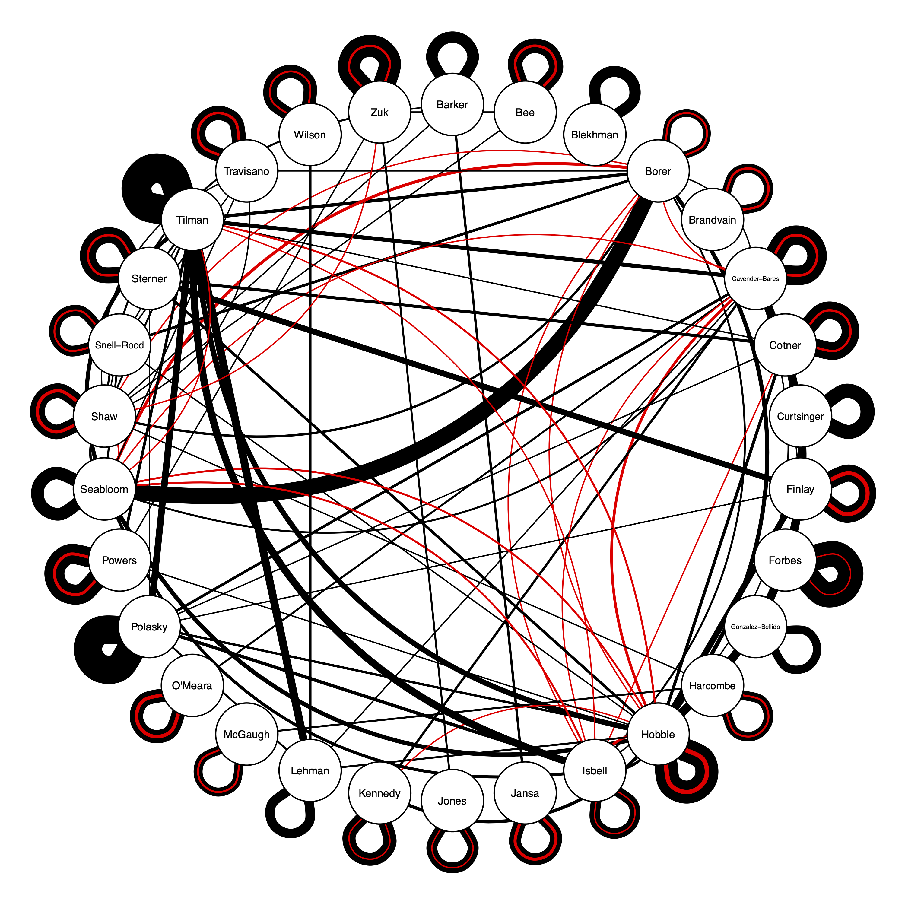

In Feb. 2020 I applied for a position as department head for the University of Minnesota Ecology, Evolution, and Behavior Department. I have made it to the interview stage in Sept. 2020. Here are materials relevant to my application, including both a talk on my science and, lower on the page, a talk on potential leadership of the department. You may be interested in my CV and people who have been through my lab. If you have any questions, please reach out at omeara.brian@gmail.com.
Meireles et al. 2020: leaf reflectance to capture plant evolutionary history. Also see https://www.spectralbiology.org/, the new $12.5M center to study spectral biology, headed up by UMN Professor Jeannine Cavender-Bares (note that I have no connection to the center – it’s just a great thing that recently started up)
McGee, Borstein, et al. 2020: cichlid evolution, including the possible evidence for and impact of hybridization
Jhwueng & O’Meara 2020: paper on numerical properties of phylogenetic tree matrices (which affects precision of parameter estimates)
Floral evolution project
O’Meara, Smith, et al. 2016: paper on floral evolution. Note that it has two co-lead authors and two co-senior authors (Fenster and Diggle)
Academic Misconduct Database: Created initially by Julie Libarkin, tracks publicly resolved and ongoing cases of sexual misconduct perpetrated by U.S. faculty, administrators and other staff. See here for Minnesota cases.
Better Letter: Resource I made to make it easier to look for biases in letters of rec
Nikaj et al. 2018: Examining trends in the diversity of the US National Institutes of Health participating and funded workforce
O’Meara et al. 2019: Unwelcome behaviors at the Evolution meetings: Survey results
Russ et al. 2002: Coming out in the classroom… An occupational hazard? The influence of sexual orientation on teacher credibility and perceived student learning.
Some key figures from talk
Figure showing coauthorship and NSF grants (2010-present, only grants through UMN, other than O’Meara grants). Only tenured faculty shown.

Coauthorship / Grant Diagram
Heatmap showing per year probability of publishing in each of the top 50 most frequently-used journals by UMN EEB faculty (total articles published in that journal by that author divided by the total years since that author’s first publication in any journal). Only associate (A) and full (F) faculty are shown.